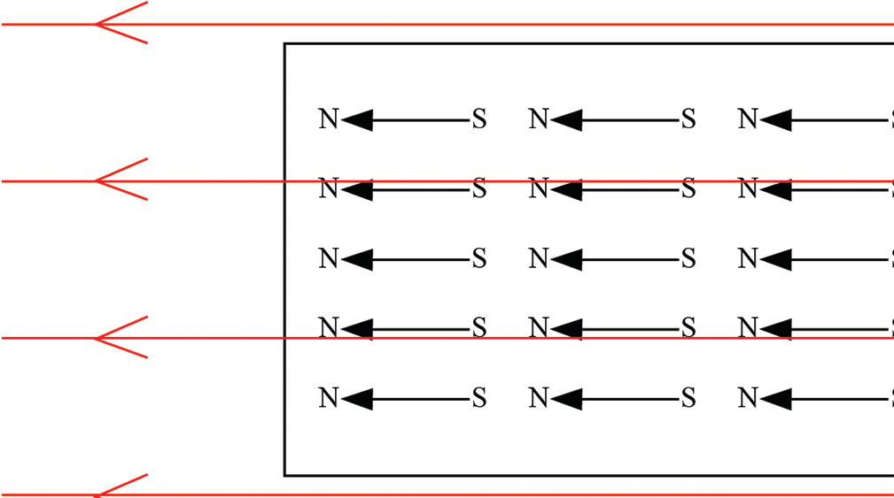

If atomic dipoles arrange in such a way that N poles of all the dipoles face in one common direction, the material is said to be magnetised.
The domains may show a net magnetic behaviour in the absence of an external magnetic field.
On applying an external magnetic field, all dipoles align themselves in the direction of the applied field.
In this way the material is strongly magnetised in the direction parallel to the magnetising field as shown in Figure 3.17.

External magnetic field
Materials in which it is possible to cause this alignment are either ferromagnetic or paramagnetic.
Ferromagnetic materials such as steel, nickel and cobalt can form permanent magnets, while paramagnetic materials such as aluminium and chromium can only be weakly magnetised and do not retain any magnetism once the external field is removed.
The alignment of domains in these materials can be achieved through one of the following: heating or vibration, stroking, and the electric method.
In the first method of magnetisation, an external magnetic field is required.
Placing an object in an external magnetic field will result in some degree of alignment.
Vibrating or heating the object can increase the amount of alignment by causing the atomic dipoles to move and eventually become aligned.
Many natural magnetic materials start out as part of lava (molten rock).
If the lava contains ferromagnetic minerals, the atoms align with the Earth’s magnetic field which is subject to vibration while the rock is still liquid.
As the rock cools and solidifies, the alignment becomes permanent.